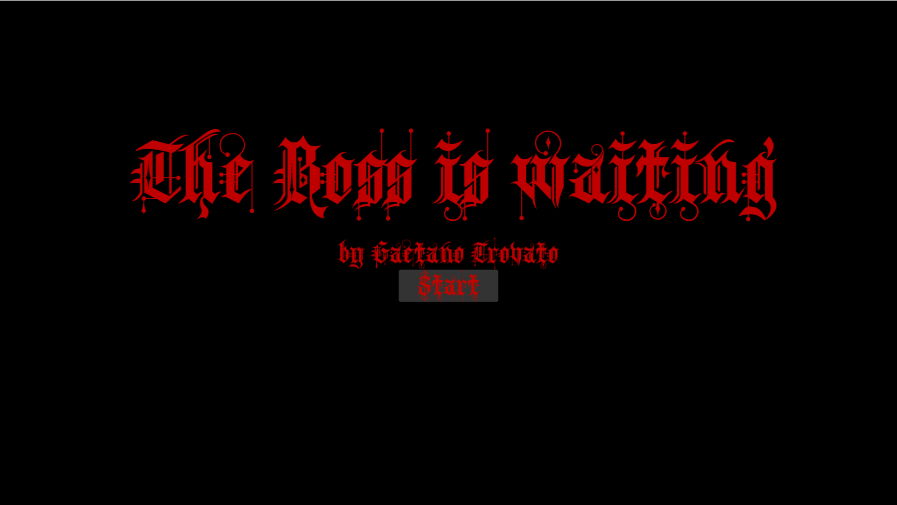
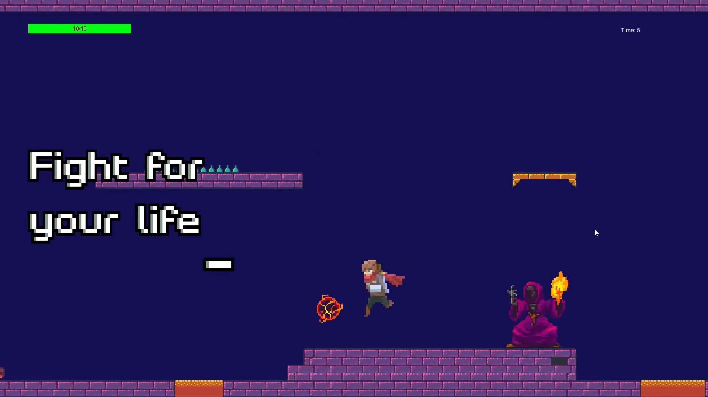
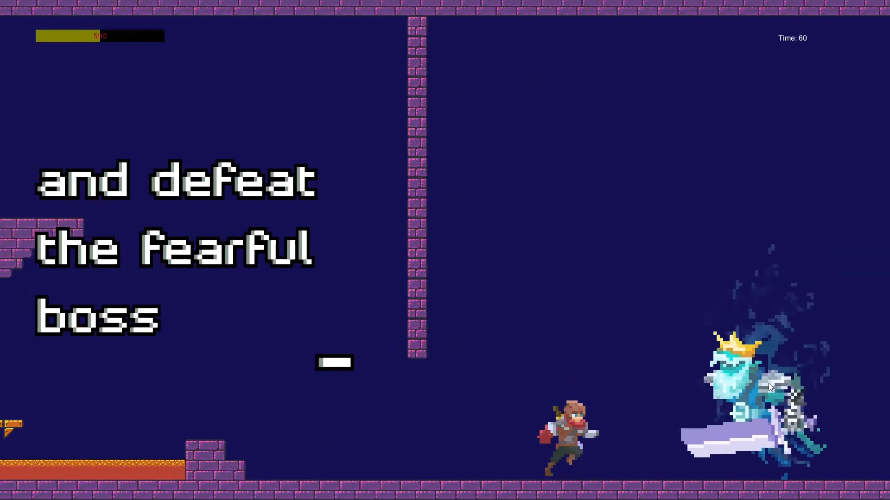

The Boss is waiting is a demo of a simple 2D action platform game made with Unity and set in a dark dungeon. The goal is to run to the boss as fast as you can, dealing with foes and traps across the path.
Originally the idea was to make a basic platform with a simple form of combat. Then in order to give more purpose to the fightning part I decided to put a multi-phases boss fight a the end of the level, taking some inspirations from recent games.

During the test runs made in the development phase, I liked challenging myself on how swiftly I could end the level. For this reason I added a timer and a quicker but more difficult path that can be chosen over the simpler and more straight-forward one to try to obtain a better time. Also I wanted to give a rewarding feeling to successful speedrunners, therefore I ended up scaling the boss life depending on how quickly the player could get to the final boss.
The project was made using only free assets gathered online, from the character's sprite to the font and all sounds. The main difficulties during the development phase were related to the implementation of the custom physics system and the key-frame animation.
All of the mechanisms in the game have been scripted from scratch, except for the camera management which is implemented throught the Cinemachine package.

The project has been initially developed only using Monobehaviours classes. However, after some considerations about the testability of the elements, I have updated the global architecture, changing it to a combination of little Monobehaviours classes and Scriptable Objects used as shared variables. Source Code